{kind=link}
{kind=link}
{kind=link}
(animation)

(animation)
We generalize this by looking for closed tours of rectangular chessboards by Kings, Rooks, or Queens so that each piece moves only one square at a time, and no piece attacks any other as they move around the tour. For a given rectangle, what is the largest number of Rooks that can be in a closed non-threatening tour? What are the corresponding answers for Kings and Queens?
 m/2
m/2  n/2 , because this is the maximum number of non-attacking Kings that will fit on such a chessboard. This can be reduced by 1 when m or n is odd, and reduced by 2 when both are odd, but surely there is a better upper bound? Corey Plover and Claudio Baiocchi noticed that K(m,n) ≥ Q(m,n), since the pieces have the same moves and the Queens are more restricted.
n/2 , because this is the maximum number of non-attacking Kings that will fit on such a chessboard. This can be reduced by 1 when m or n is odd, and reduced by 2 when both are odd, but surely there is a better upper bound? Corey Plover and Claudio Baiocchi noticed that K(m,n) ≥ Q(m,n), since the pieces have the same moves and the Queens are more restricted.You can click on some of the tours below for an animation of the tour.
I proved that R(3,4n+2)=3 and R(3,2n)≥2 by generalizing these tours:
| 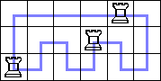 (animation) | 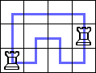 (animation) |
David Bush proved that R(2n,2m)=2min{m,n} by considering zig-zag tours like this: 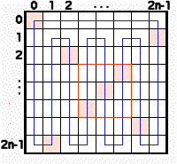
He showed these optimal values for K(3,n):
He showed these other lower bounds for K(3,n):
And he showed K(3,2n)≥n by generalizing the tour:
He showed K(4,n)≥n-1 (and that K(4,n)=n-1 for 3≤n≤8) with a series of tours:
He showed K(4,rs)≥2s for r≥3 by generalizing the tour:
He showed K(4,rs)≥4s for r≥5 odd by generalizing the tour:
He showed K(4,rs)≥8s for r≥13 odd by generalizing the tour:
He showed K(5,n)≥n for r≥3 by generalizing these tours:
He showed these lower bounds for larger rectangles:
Finally, he gave a very general tour that shows K(3n,4m)≥2mn:
Claudio Baiocchi sent me an applet to animate most of these tours.
Here are the best known bounds on K(n,m):
| n \ m | 3 | 4 | 5 | 6 | 7 | 8 | 9 | 10 | 11 | 12 | 13 | 14 | 15 | 16 | 17 |
|---|---|---|---|---|---|---|---|---|---|---|---|---|---|---|---|
| 3 | 1 | 2 | 3 | 3 | 2 | 4 | 3 | 5 | 5 | 6 | 4 | 7 | [5,14] | [8,15] | [7,16] |
| 4 | 3 | 4 | 5 | 6 | 7 | [8,9] | [9,10] | [10,11] | [11,12] | [12,13] | [13,14] | ||||
| 5 | [5,7] | [6,8] | [7,10] | [8,11] | [9,13] | [10,14] | [11,16] | [12,17] | [13,19] | [14,20] | |||||
| 6 | [6,9] | [7,11] | [8,12] | [9,14] | [12,15] | ||||||||||
| 7 | [7,14] | [8,15] | |||||||||||||
| 8 | [8,16] |
| 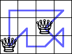 (animation) | (animation) |
David Bevan gave many great results for Q(n,m). He showed Q(3,7)=1 with his computer program.
He showed Q(3,9)=2, Q(3,11)=2, and Q(3,13)≥2:
He showed Q(3,2n)≥2 for n≥4 by generalizing these tours:
He showed Q(3,3n)≥3 for n≥4 by generalizing these tours:
He showed these optimal values of Q(4,n):
 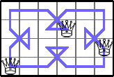 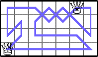 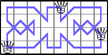
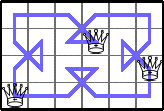 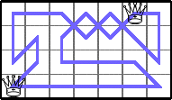 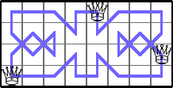He showed these lower bounds for Q(4,n):
He showed that Q(4,2n)=4 for n≥5 by generalizing these tours:
He showed these optimal values of Q(5,n):
He showed these lower bounds for Q(5,n):
 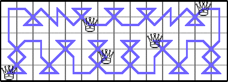
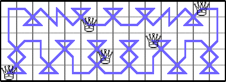

He showed these lower bounds for Q(6,n):
Here are the best known bounds on Q(n,m):
| n \ m | 3 | 4 | 5 | 6 | 7 | 8 | 9 | 10 | 11 | 12 | 13 | 14 | 15 | 16 | 17 | 18 |
|---|---|---|---|---|---|---|---|---|---|---|---|---|---|---|---|---|
| 3 | 1 | 2 | 1 | 3 | 1 | 2 | 2 | 2 | 2 | 3 | [2,3] | [2,3] | 3 | [2,3] | [1,3] | 3 |
| 4 | 2 | 2 | 3 | 2 | 3 | [3,4] | 4 | [2,4] | 4 | [1,4] | 4 | [2,4] | 4 | [1,4] | 4 | |
| 5 | 2 | 3 | [2,5] | [4,5] | [1,5] | 5 | [1,5] | 5 | [1,5] | 5 | [1,5] | 5 | [1,5] | 5 | ||
| 6 | [3,5] | [2,6] | [4,6] | [2,6] | [5,6] | [1,6] | 6 |
If you can extend any of these results, please e-mail me. Click here to go back to Math Magic. Last updated 7/25/07.